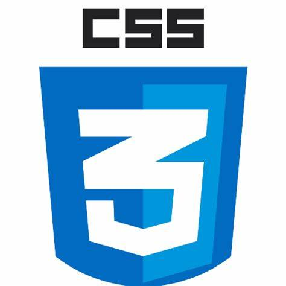
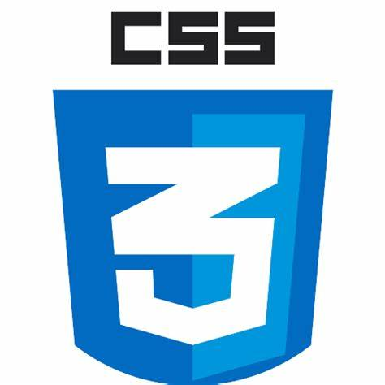

Hi! I’m Lindiwe Thabsile Dlomo, a dedicated and innovative professional based in Johannesburg, South Africa. With a diverse background in web development, digital marketing, and technology, I’m passionate about creating impactful solutions that drive positive change. I specialize in web development, utilizing HTML, CSS, and JavaScript to build responsive and engaging websites. My projects often incorporate modern frameworks and technologies to deliver optimal user experiences. In addition to web development, I have a strong foundation in Python programming, which I use for a variety of applications, including data analysis and automation. for backend, i am skilled in Node.js, Express.js and Django and for Database i have a SQL knowledge and have sharpened all these skills through my Year experience at SBV Services. My expertise extends to UI/UX design, where I focus on creating intuitive and visually appealing interfaces that enhance user satisfaction. I’m also skilled in Robotic Process Automation (RPA), using tools like UiPath to streamline repetitive tasks and improve operational efficiency.
In the realm of digital marketing and SEO, I work to optimize web content, improve search engine rankings, and drive organic traffic which i have strengthened my skill with the Work-Readiness programme from ORT (SA). My approach involves strategic keyword research, compelling content creation, and detailed performance analysis. I am particularly passionate about making technology accessible to rural communities and schools. Through my startup, TechBridge Solutions, I aim to provide affordable tech support and development services to underserved areas, helping bridge the tech gap and foster digital literacy. Outside of work, I enjoy staying updated on the latest tech trends, exploring new tools and technologies, and continuously expanding my skill set. I believe in the power of technology to transform lives and am committed to leveraging my skills to contribute to meaningful projects and initiatives.
I have a strong foundation in web development, utilizing HTML, CSS, and JavaScript to create responsive and dynamic websites. My projects often involve modern frameworks and libraries to enhance user experiences.
With extensive experience in Python, I have developed a variety of applications, from web scraping tools to data analysis scripts. My Python expertise includes working with popular libraries like pandas, NumPy, and Flask.
Understanding the importance of user experience, I design intuitive and attractive interfaces. I employ best practices in UI/UX design to ensure that my applications are both functional and user-friendly.
Specializing in RPA, I automate repetitive tasks to improve efficiency and accuracy. My skills include using UiPath and Microsoft Power Automate to develop robust automation solutions.
With a background in SEO and digital marketing, I optimize web content to improve search engine rankings and drive organic traffic. My strategies include keyword research, content creation, and performance analysis.
I have a knack for turning raw data into meaningful insights. Using tools like Python, Excel, and Tableau, I analyze data trends and create visualizations that inform business decisions.
LinkedIn: https://www.linkedin.com/in/lindiwe-dlomo-b50050b8/
GitHub: https://github.com/LindiweD-Collab/ https://github.com/LindiweDlomo/
Codepen: https://codepen.io/Codepen-thaby

Artificial Intelligence (AI) continues to advance rapidly, with new developments in machine learning, natural language processing, and computer vision. Recent trends include the rise of AI ethics, AI-driven automation, and the integration of AI in healthcare, finance, and other industries.

Quantum computing is making significant strides, promising to revolutionize computing by solving complex problems faster than classical computers. Key developments include advancements in quantum hardware, algorithms, and applications in cryptography, materials science, and optimization problems.
.jpeg)
The rollout of 5G technology is transforming the telecommunications industry, offering faster data speeds, lower latency, and improved connectivity. This technology is enabling new applications such as IoT, smart cities, and enhanced mobile broadband experiences.
 



.jpeg)


.webp)